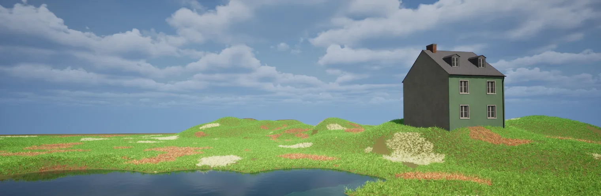
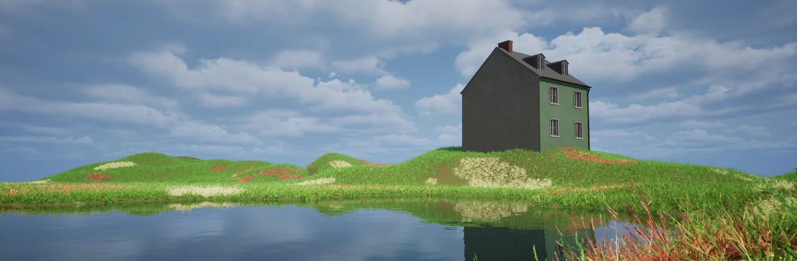
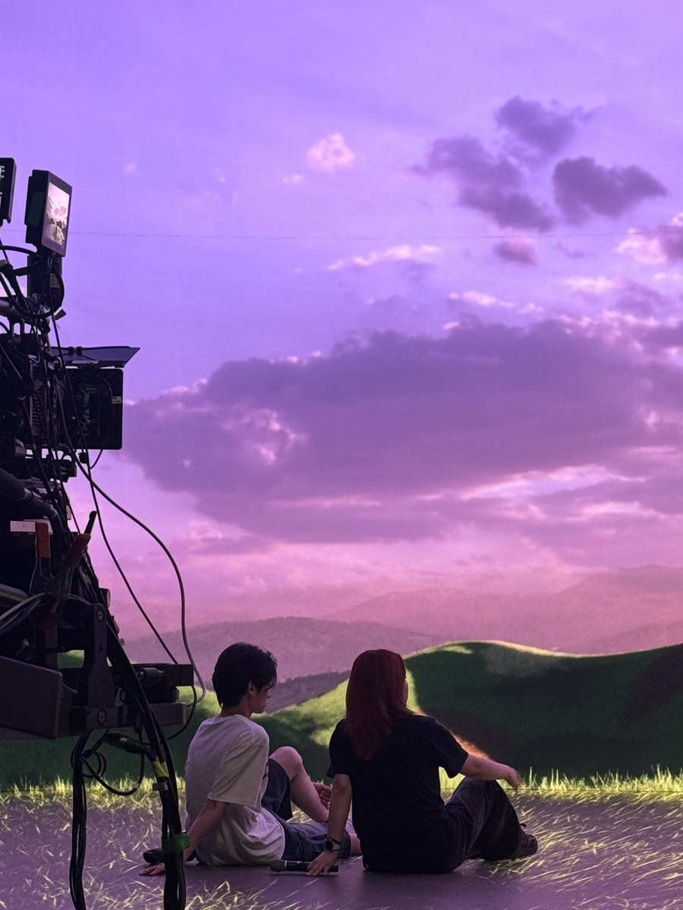
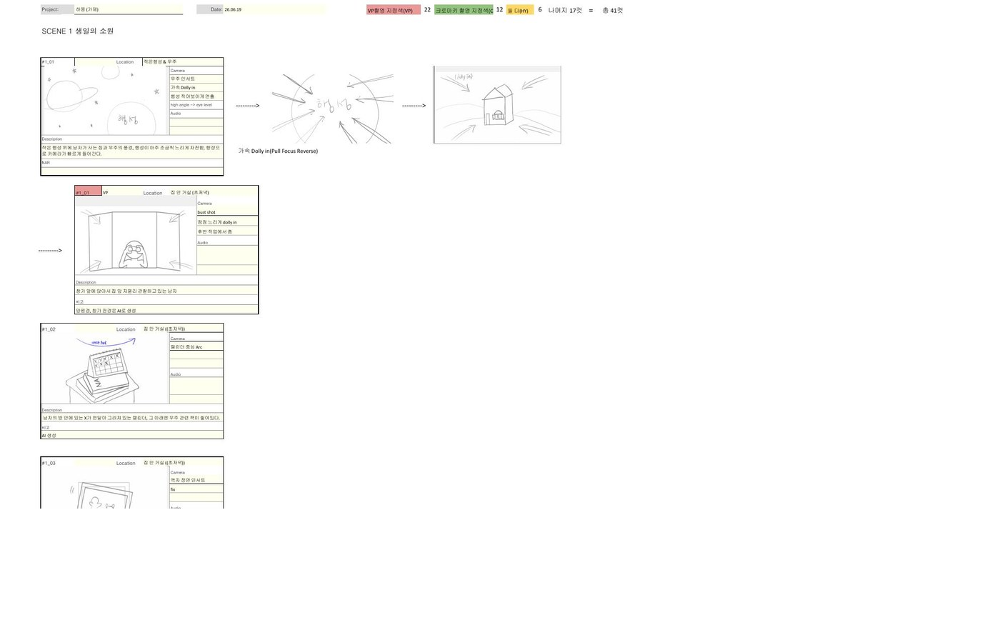
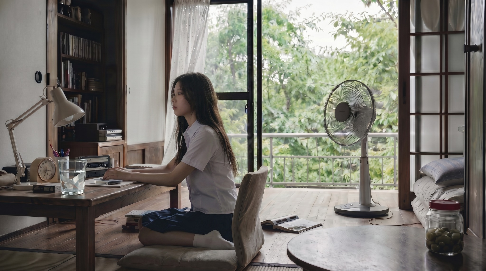
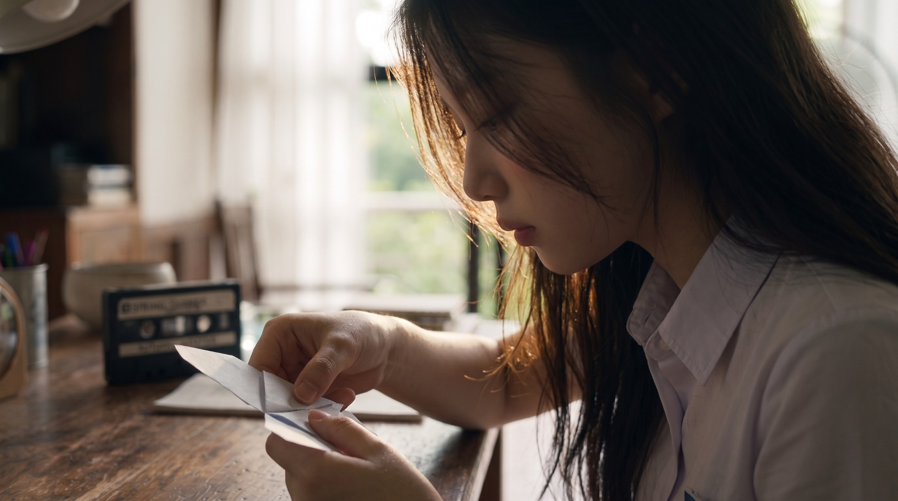
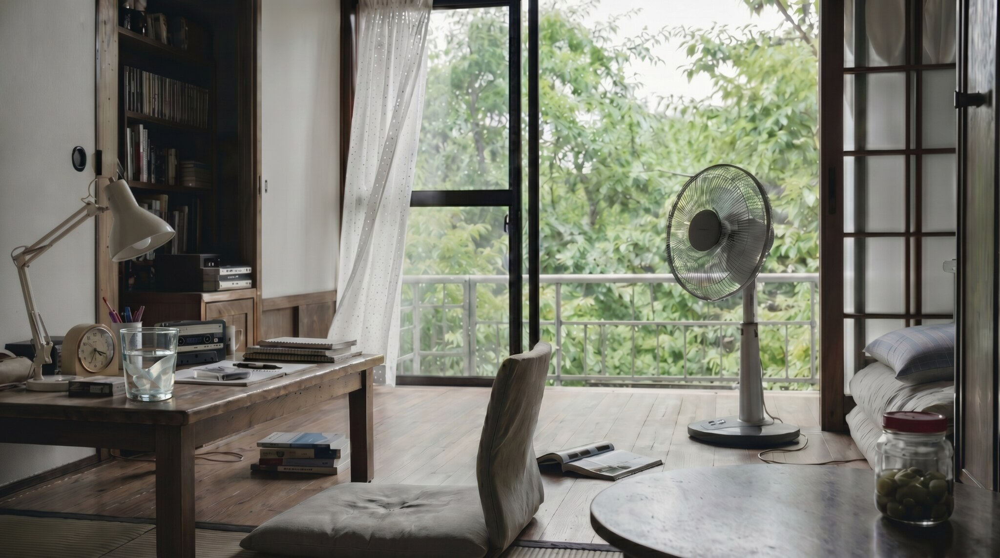

VISUAL CONTENT · AI / VP / CHARACTER IP
세계관을
영상 경험으로
구현합니다.
기획·현장·후반을 하나의 흐름으로 설계하고, 기술 제약이 생겨도 연출 의도를 끝까지 결과물로 완성합니다.
AI · UNREAL HYBRID MUSIC VIDEO
鍛造 (단조)
모션캡처·언리얼·AI를 하나의 시퀀스로 연결한 1분 40초 뮤직비디오
서로 다른 제작 방식이 하나의 세계처럼 이어지는 하이브리드 뮤직비디오 구현
연출 총괄 · 시각 톤 설계 · AI 제작분 70% 직접 제작
기술 이슈 발생 후 파이프라인을 재설계해 일정 안에 1분 40초 완성
모션캡처 데이터 이슈로 예정한 언리얼 씬을 구현할 수 없었습니다.
언리얼 컷을 핵심 4–5컷으로 압축하고 나머지를 AI 생성으로 전환했습니다.
광원·채도·그레인·컷 호흡을 통일해 두 제작 방식을 한 편으로 묶었습니다.


툴의 차이보다 하나의 장면으로 읽히는지를 기준으로 후반 톤을 통제했습니다.
VP · CHROMA KEY · AI COMPOSITE · CHARACTER IP
하몽 (夏夢)
판타지 단편과 캐릭터 IP를 VP·실사·AI 합성으로 확장한 하이브리드 프로젝트
영상 속 외계인 캐릭터를 오프라인 굿즈와 쇼케이스까지 이어지는 IP로 구현
프로덕션 코디네이션 · 제작 문서 체계 · 하몽 캐릭터 디자인
크로마키 1일 + VP 1일 촬영 완료 · 러프컷 및 쇼케이스 확장 진행

보라색 벨벳은 화면 질감이면서, 미래의 봉제 인형 촉감을 미리 보여주는 선택입니다.
굿즈 제작을 고려해 인형처럼 부드럽고 손이 가는 재질로 설계했습니다. 관객이 처음 보는 캐릭터에게도 즉각적인 친밀감과 호감을 느끼도록 라벤더 컬러와 낮은 광택의 벨벳 질감을 적용했습니다.




실시간 렌더 배경을 단순한 촬영 배경이 아니라 캐릭터의 정서와 세계관을 설명하는 공간으로 설계했습니다.



K-POP WORLDBUILDING · PROLOGUE FILM
Summer, Again
여름의 기억과 회복을 종이 나비, 색, 화면비 변화로 설계한 개인 세계관 프로젝트
여름의 기억을 다시 감는 소녀의 이야기를 8씬 34컷 세계관으로 설계
기획 · 각본 · 비주얼 디렉팅 · AI 캐릭터 및 공간 개발
프로덕션 바이블 완성 · 캐릭터·공간 고정 워크플로 검증 · 20초 공개

현재의 시간 — 생활 소품, 열린 창, 낮은 채도와 부드러운 자연광으로 멈춰 있는 여름의 공기를 정의했습니다.

종이 나비 — 지나간 계절과 지금을 연결하는 이야기의 매개체

여름의 빛 — 기억과 현재가 얼굴 위에서 겹치는 감정의 순간

정면·3/4·측면·후면의 얼굴, 머리 길이, 의상 실루엣을 기준점으로 고정했습니다.



- 색현재는 머스터드 옐로·틸 블루, 기억은 저채도와 16mm 그레인
- 화면비기억에 진입할 때 16:9에서 1:1로 좁아져 감정의 밀도를 높임
- 일관성캐릭터·공간·소품 시트를 기준으로 34컷을 같은 세계 안에 고정
ABOUT
기술을 나열하기보다,
기술이 필요한 이유를 설계합니다.
기획, 촬영 현장, AI 생성, 후반 편집을 분리하지 않고 하나의 제작 흐름으로 봅니다. 계획이 무너지는 순간에는 툴을 고집하기보다, 연출 의도를 지킬 수 있는 다음 경로를 빠르게 선택합니다.
세계관 · 스토리보드 · 컬러 · 화면비 · 컷 호흡
AI 영상 · VP · 크로마키 · 실사/생성 합성
타임라인 · 콜시트 · 부서 통합 문서 · 현장 리스크 관리
PROPOSAL
아티스트 세계관을 한 편의 영상에서 여러 접점으로 확장합니다.
3분 내외의 세계관 프롤로그
15초·30초 세로형 티저
캐릭터·컬러·화면비·생성 기준
실사 감정 + AI 확장 + VP 공간 통제
LET'S CREATE THE NEXT EXPERIENCE.
enditor012@gmail.com ↗